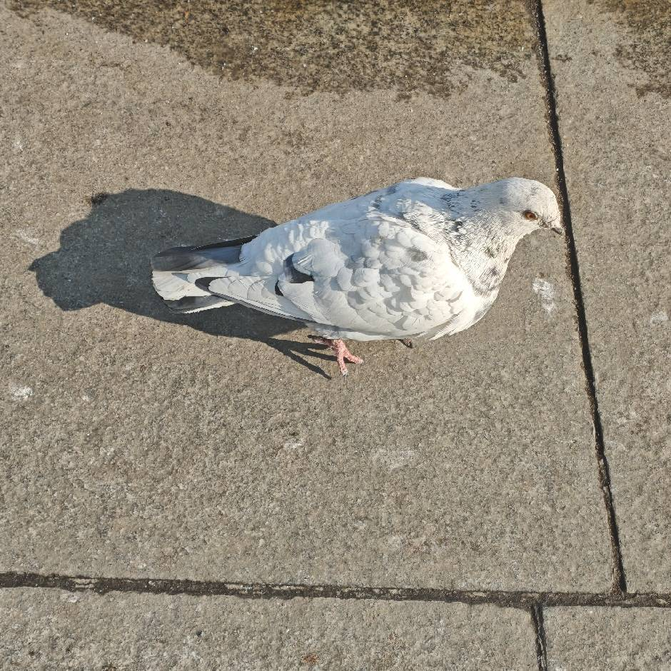

羽毛球
2025 年开始接触羽毛球并爱上它，擅长羽毛球和篮球；喜欢林丹、李梓嘉。

LYS's PROFILE
爱打羽毛球，爱打游戏，喜欢散步、爬山和游玩。
大家好！我是李禹硕，别名“硕”，16 岁，住在大连市，是大连市第四十八中学的高二学生。爱打羽毛球，爱打游戏，也喜欢散步、爬山、游玩。
性格爱笑、老实；喜欢阅读、运动、旅行和美食。最近在打瓦、研究羽毛球，也热衷于学习。
羽毛球从 2025 年开始接触，慢慢就爱上了；喜欢林丹、李梓嘉。篮球也会打一点。
喜欢听《龙卷风》，看《火影忍者》；爱吃西红柿炒鸡蛋和肠粉，肥肉不行。
“做好自己。”
2025 年开始接触羽毛球并爱上它，擅长羽毛球和篮球；喜欢林丹、李梓嘉。
爱打游戏，最近在打瓦；也喜欢看《火影忍者》。
喜欢听《龙卷风》，爱吃西红柿炒鸡蛋、肠粉；不喜欢太吵的低重音和肥肉。
喜欢散步、爬山、游玩，也喜欢阅读和旅行，享受运动和路上的风景。
生日在 07 月 09 日，巨蟹座。
2025 年开始接触羽毛球并爱上它，喜欢林丹、李梓嘉，也在研究羽毛球。
爱打游戏，最近在打瓦；也喜欢看《火影忍者》。
研究羽毛球、热衷于学习，做好自己。
这是李禹硕的好友主页；联系方式仅用于朋友联系，添加时请说明来意。